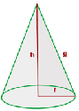

General Area Calculator
Cono
V = (Π · r2 · h)⁄3 -> El volumen es igual a la tercera parte del producto de PI (3'1416...) por el cuadrado del radio, por la altura.
En geometría, un cono recto es un sólido de revolución generado por el giro de un triángulo rectángulo alrededor de uno de sus catetos. Al círculo conformado por el otro cateto se denomina Base y al punto donde confluyen las generatrices se llama vértice.
Superficie cónica se denomina a toda superficie reglada conformada por el conjunto de rectas que teniendo un punto común (el vértice), intersecan a una circunferencia no coplanaria.